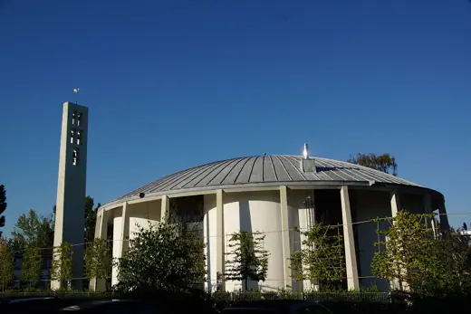
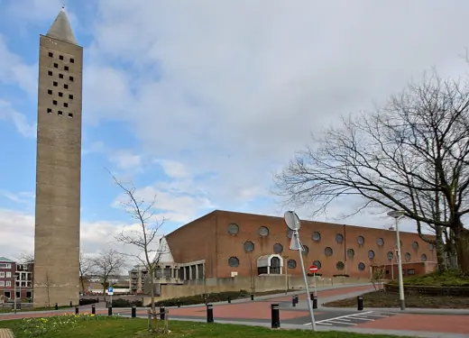
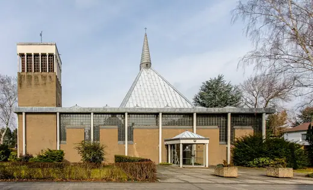
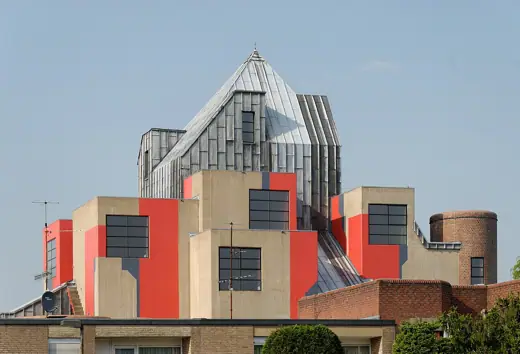

Gottfried Böhm buildings 18
Sort
 Historisches Museum SaarYear unavailable · Saarbrücken
Historisches Museum SaarYear unavailable · Saarbrücken St. Maria Königin1958 · Düsseldorf
St. Maria Königin1958 · Düsseldorf St. Josef1959 · Grevenbroich
St. Josef1959 · Grevenbroich Bensberg Town Hall1969 · Bergisch Gladbach
Bensberg Town Hall1969 · Bergisch Gladbach St. Hildegardis1970 · Düsseldorf
St. Hildegardis1970 · Düsseldorf Diözesanmuseum Paderborn1975 · Paderborn
Diözesanmuseum Paderborn1975 · Paderborn Hans Otto Theater2006 · Potsdam
Hans Otto Theater2006 · Potsdam
Sankt Ursula (Kalscheuren)Year unavailable · Hürth Jingliao Holy Cross Church1955 · Tainan
Jingliao Holy Cross Church1955 · Tainan
Gregoriuskerk1959 · Brunssum
St. Fronleichnam1960 · Cologne St. Johannes der Täufer1965 · Cologne
St. Johannes der Täufer1965 · Cologne Neviges Pilgrimage Church1968 · Velbert
Neviges Pilgrimage Church1968 · Velbert Christi Auferstehung1970 · Cologne
Christi Auferstehung1970 · Cologne
St. Matthäus1970 · Düsseldorf Züblin-Haus1985 · Stuttgart
Züblin-Haus1985 · Stuttgart